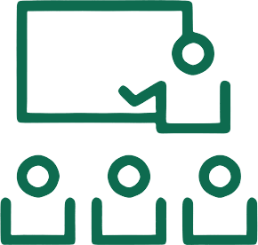

BijlesdirectPersoonlijke 1-op-1 online bijles · basisschool & voortgezet onderwijs
Bijlesdirect is de persoonlijke tegenhanger van het anonieme bijlesinstituut: één vaste docent, volledige begeleiding standaard inbegrepen, en risicoloos starten — geen inschrijfkosten, maandelijks opzegbaar.
Het icoon (klaslokaal met docent en drie leerlingen) altijd in merkgroen op lichte ondergrond, of crème op donkere ondergrond. Woordmerk altijd in Fraunces SemiBold. Ruimte rondom: minimaal de hoogte van één leerling-figuurtje. Niet uitrekken, hellen of hercombineren met andere kleuren.
Knoppen altijd afgerond (pill-vorm) · één primaire (groene) knop per sectie · goud alleen voor sterren en "Meest gekozen" · kaarten met 16–28px afronding en subtiele lijnrand, nooit harde schaduwen.